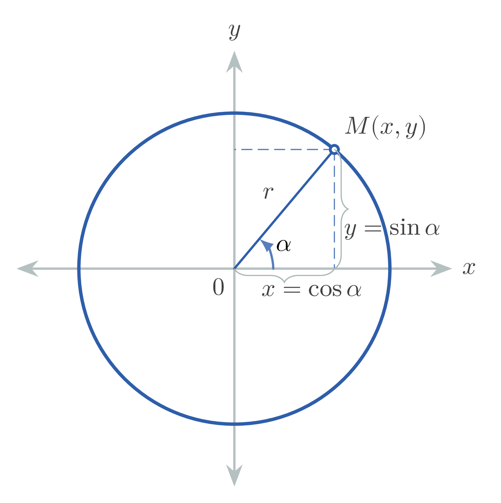

Angles: $\alpha, \beta$
Real numbers (coordinates of a point): $x, y$
Whole number: $k$
1. $1 \text{ rad} = \dfrac{180^{\circ}}{\pi} \approx 57^{\circ}17'45''$
2. $1^{\circ} = \dfrac{\pi}{180} \text{ rad} \approx 0.017453 \text{ rad}$
3. $1' = \dfrac{\pi}{180 \cdot 60} \text{ rad} \approx 0.000291 \text{ rad}$
4. $1'' = \dfrac{\pi}{180 \cdot 3600} \text{ rad} \approx 0.000005 \text{ rad}$
| Angle (degrees) | $0^\circ$ | $30^\circ$ | $45^\circ$ | $60^\circ$ | $90^\circ$ | $180^\circ$ | $270^\circ$ | $360^\circ$ |
|---|---|---|---|---|---|---|---|---|
| Angle (radians) | $0$ | $\dfrac{\pi}{6}$ | $\dfrac{\pi}{4}$ | $\dfrac{\pi}{3}$ | $\dfrac{\pi}{2}$ | $\pi$ | $\dfrac{3\pi}{2}$ | $2\pi$ |
1. $\sin \alpha = \dfrac{y}{r}$
2. $\cos \alpha = \dfrac{x}{r}$
3. $\tan \alpha = \dfrac{y}{x}$
4. $\cot \alpha = \dfrac{x}{y}$
